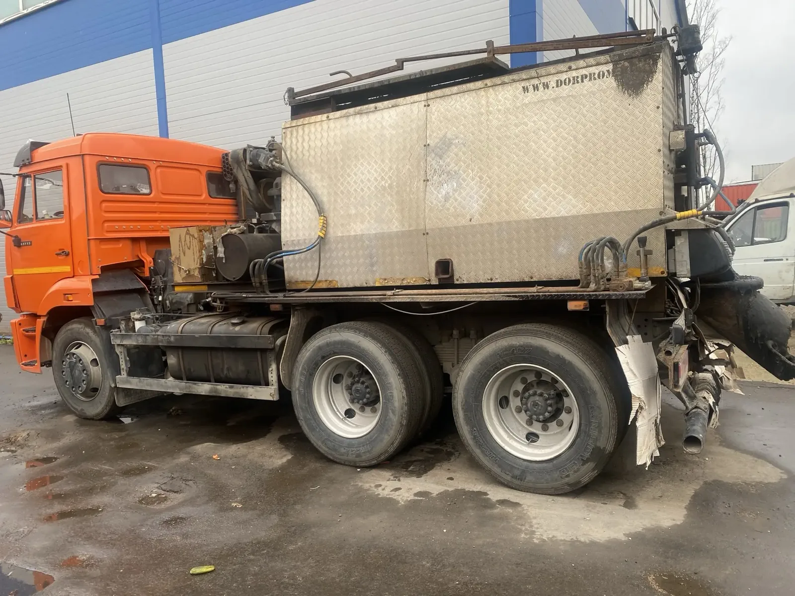

Кохер
Перевозит и поддерживает температуру материала.

Литой асфальт
Перевозка литого асфальта с поддержанием рабочей температуры для специальных и локальных ремонтных работ.
Назначение машины
Термос-бункер на автомобильном шасси перевозит горячий материал от места загрузки до ремонтного участка и поддерживает необходимый температурный режим по пути и во время работы.
Перевозит и поддерживает температуру материала.
Нарезка, очистка и обработка ремонтной зоны.
Мини-погрузчик и ручная техника по задаче.
Точный расчёт
Расскажите, откуда забрать материал, куда доставить и какой режим подачи нужен на объекте.